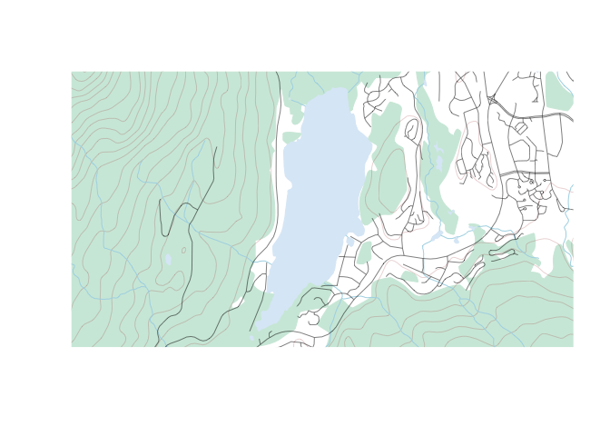
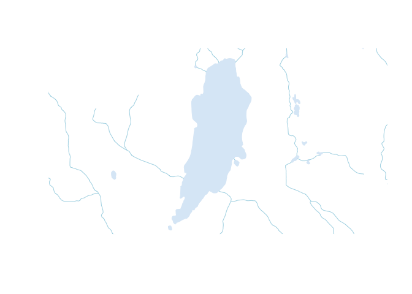
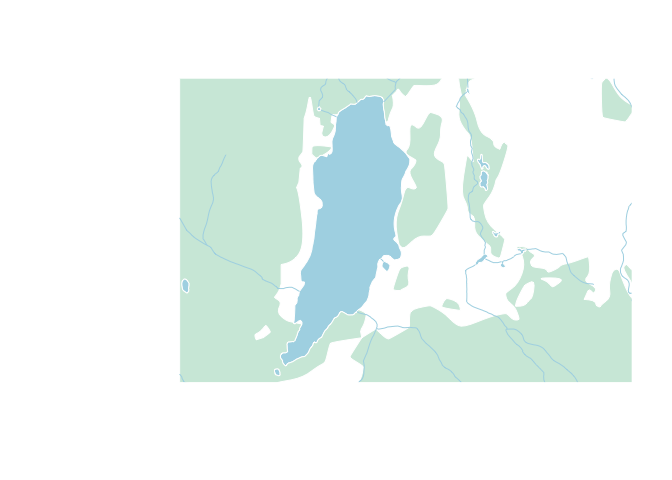
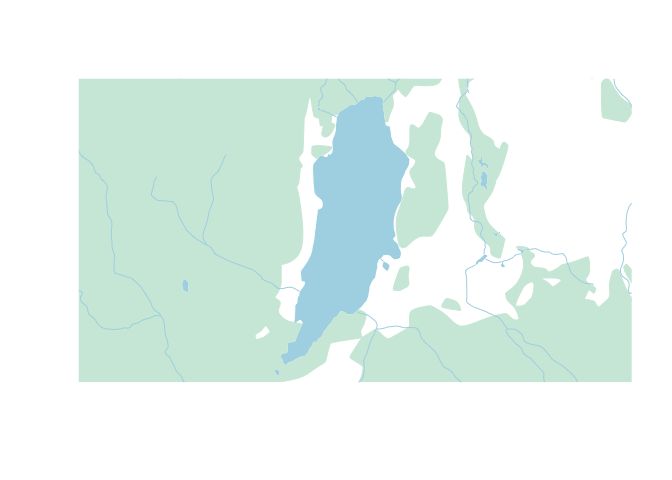
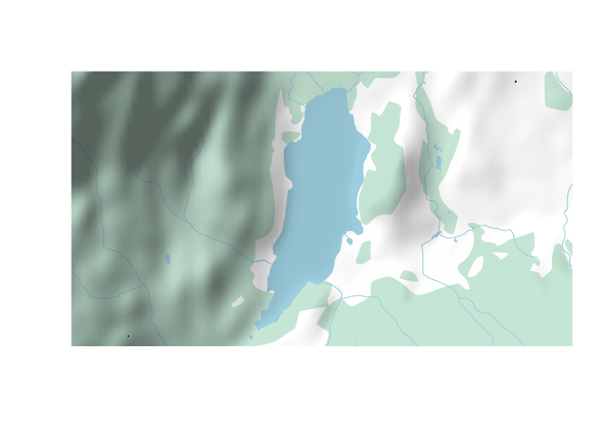
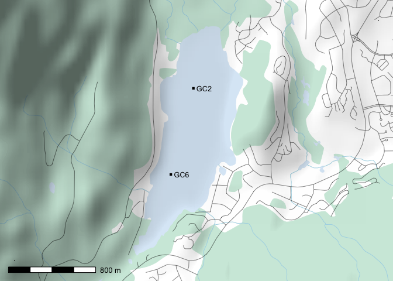

RCanVec
Access and plot CanVec and CanVec+ data for rapid basemap creation in Canada
CanVec Data in R
An R package to access and plot CanVec and CanVec+ data for rapid basemap creation in Canada
NOTE: If you're getting all kinds of warnings about how your sheet may not exist, you need to upgrade to the newest version of rcanvec! GeoGratis changed the download directory for sheets organized in this way such that an update is required to access the information.
{ranvec} provides an interface to the National Topographic System (NTS), which is the way in which a number of freely available Canadian datasets are organized. CanVec and CanVec+ datasets, which include all data used to create Canadian topographic maps, are two such datasets that are useful in creating vector-based maps for locations across Canada. This packages searches CanVec data by location, plots it using pretty defaults, and exports it to human-readable shapefiles for use in another GIS.
Installation
The rcanvec package is available on CRAN and can be installed using install.packages("rcanvec"). The manual is also available on the CRAN website.
Exporting CanVec data
If you're like me, you'll probably want to make a map in some program other than R (QGIS is my personal favourite). You can do this easily using the canvec.export() function. The function combines all the NTS sheets you pass into it and exports to a folder of your choosing (with nice human-readable names!). We're going to use the prettymapr package to help with a few things as well.
library(rcanvec)
library(prettymapr)
altalake <- makebbox(50.1232, -122.9574, 50.1035, -123.0042)canvec.download(nts(bbox=altalake))
canvec.export(nts(bbox=altalake), "canvec_data")Finding your NTS Sheet
These things called "paper maps" used to exist, each of which had a number (the ones we'll be looking at have the IDs "092J01" and "092J02"). The nts() function finds and/or parses these into series/area/sheet parameters so they can be used by the canvec.* functions (these numbers are how the Canadian government happens to organize this data). If this is confusing, don't worry and see the section below!
nts(bbox=altalake)## [[1]]
## [1] "092" "J" "03"
##
## [[2]]
## [1] "092" "J" "02"
nts("92j1")## [1] "092" "J" "01"
nts("092J01", "092J02")## [[1]]
## [1] "092" "J" "01"
##
## [[2]]
## [1] "092" "J" "02"
The ntsstring() function produces strings in case you need to print them out somehow.
ntsstring(bbox=altalake)## [1] "092J03" "092J02"
Using {rcanvec} plot basemaps
The {rcanvec} package provides access to data produced by the Canadian government (the CanVec+ dataset) that is useful for creating basemaps for small-scale locations in Canada. If you're not in Canada, this won't help you much. Similarly, if you're trying to make a map of Ontario, this is not the package for you. The site we will look at (Alta Lake, near Whistler BC) is a couple of kilometres wide, which is about right in terms of scale.
Step 1: Find your bounding box
The {rcanvec} package plots based on a bounding box, or an area that you would like to be visible. There's a few ways to go about doing this, but the easiest way is to visit the Open Street Maps Export page, zoom to your area of interest, and copy/paste the values into makebbox(northlat, eastlon, southlat, westlon) from the {prettymapr} package. You can also use searchbbox("my location name"), also from the {prettymapr} package, which will query google for an appropriate bounding box. You'll notice that the bounding box returned by these methods is just a 2x2 matrix, the same as that returned by bbox() in the {sp} package.
altalake <- searchbbox("alta lake, BC")
# or
altalake <- makebbox(50.1232, -122.9574, 50.1035, -123.0042)Back in the days of paper maps, NTS references were used to number maps in an orderly way. For example, the "Wolfville" 1:50,000 scale mapsheet would be referred to as "021H01", and our mapsheets for Alta Lake in BC would be 092J02 and 092J03. If you don't know what these are it's still ok, but this is how the government organizes the data. Take a minute to get familiar with your NTS reference(s), if you feel into it.
# get a list of NTS references based on a bounding box
nts(bbox=altalake)## [[1]]
## [1] "092" "J" "03"
##
## [[2]]
## [1] "092" "J" "02"
If you run this command and your bounding box returns more than 4 mapsheets, you're probably going to want to zoom in. If you're looking to export your data, you'll need to have some idea of what these are.
Step 2: Preview your map
{rcanvec} has a method to quickly plot a bounding box: canvec.qplot(). We'll pass our bounding box as the bbox argument, and we can use the layers argument to customize our layers. If things take too long to plot, you may want to just use layers="waterbody" (the "road" layer in particular usually takes a long time to plot). Layers you may want to use are "waterbody", "forest", "river", "contour", "building" and "road". Note that the order you put them in will change the appearance of the map.
canvec.qplot(bbox=altalake)
canvec.qplot(bbox=altalake, layers=c("waterbody", "river"))
Step 3: Refine your plotting options (optional)
It's possible (but not at all necessary) to load layers individually and plot them manually, giving us more control over the appearance of the map. You'll have to have called canvec.qplot(bbox=XX) or canvec.download(nts(bbox=XX)) before you can load a layer.
waterbody <- canvec.load(nts(bbox=altalake), layerid="waterbody")
rivers <- canvec.load(nts(bbox=altalake), layerid="river")
forest <- canvec.load(nts(bbox=altalake), layerid="forest")Using the graphic parameters such as col and border, we can plot our data manually. Note you'll have to use xlim and ylim arguments to zoom in. Also, for all calls to plot() after the first one, you'll have to pass add=TRUE or it will create a new plot. Because we're dealing with 2 mapsheets, canvec.load() returns a list of layers, and if you don't understand that you should pobably stick to using canvec.qplot().
plot(waterbody[[2]], col="lightblue", border=0, xlim=altalake[1,], ylim=altalake[2,])
plot(forest[[2]], col="#D0EADD", border=0, add=TRUE)
plot(rivers[[2]], col="lightblue", add=TRUE)
If you'd still like to use the canvec.qplot() function, it's also possible to build this customization as a "list of lists", best shown by example:
plotoptions = list()
plotoptions$waterbody <- list(col="lightblue", border=0)
plotoptions$forest <- list(col="#D0EADD", border="#D0EADD")
plotoptions$river <- list(col="lightblue")
canvec.qplot(bbox=altalake, layers=c("waterbody", "forest", "river"), options=plotoptions)
Step 4: Add overlays
Next we'll use the lines(), polygon(), arrows(), and text() functions to draw on top of the map we've just plotted.
canvec.qplot(bbox=altalake, layers=c("waterbody", "forest", "river"), options=plotoptions)
points(c(-122.9841, -122.9812), c(50.11055, 50.11765),
pch=15, cex=0.6)
text(c(-122.9841, -122.9812), c(50.11055, 50.11765),
labels=c("GC6", "GC2"), adj=c(-0.2, 0.5), cex=0.8)A neat trick is to use the {rosm} package to add a hillshade on top of our map, which we would normally do before plotting our overlays. We'll have to tell osm.plot() not to project its data, since we're already in lat/lon.
library(rosm)
canvec.qplot(bbox=altalake, layers=c("waterbody", "forest", "river"), options=plotoptions)
osm.plot(altalake, type="hillshade", project=FALSE, add=TRUE)
Step 5: Putting it all together
Putting it all together, an example plotting script might like this (here we're using prettymap() to set the margins and add a scalebar):
library(prettymapr)
library(rosm)
library(rcanvec)
altalake <- makebbox(50.1232, -122.9574, 50.1035, -123.0042)
prettymap({
canvec.qplot(bbox=altalake, layers=c("waterbody", "forest", "river", "road"))
osm.plot(altalake, type="hillshade", project=FALSE, add=TRUE)
points(c(-122.9841, -122.9812), c(50.11055, 50.11765),
pch=15, cex=0.6)
text(c(-122.9841, -122.9812), c(50.11055, 50.11765),
labels=c("GC6", "GC2"), adj=c(-0.2, 0.5), cex=0.8)
})
There's tons of options for prettymap() that let you customize the north arrow, scale bar etc., which you can find in the {prettymapr} manual.